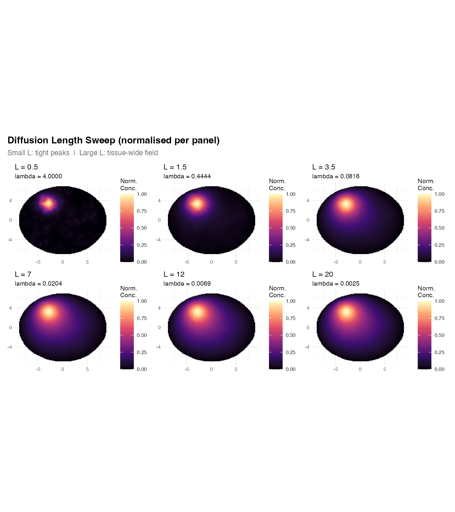
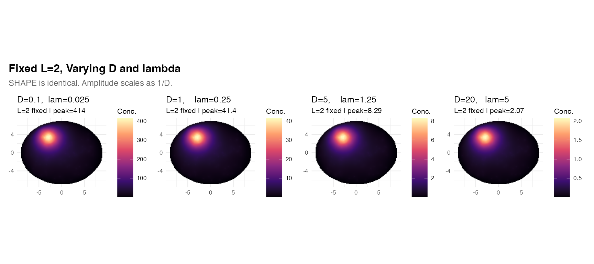
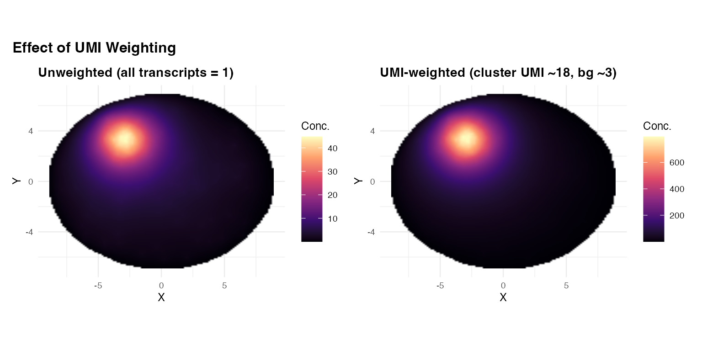
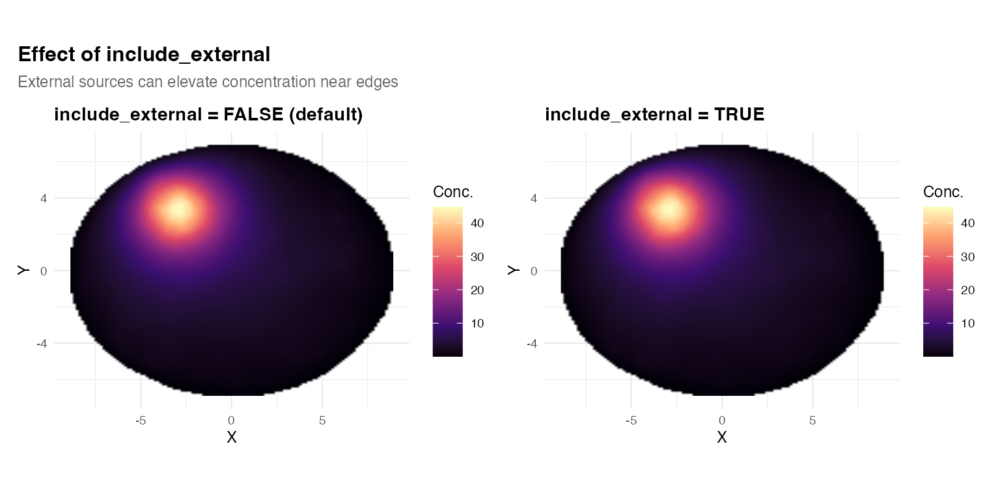
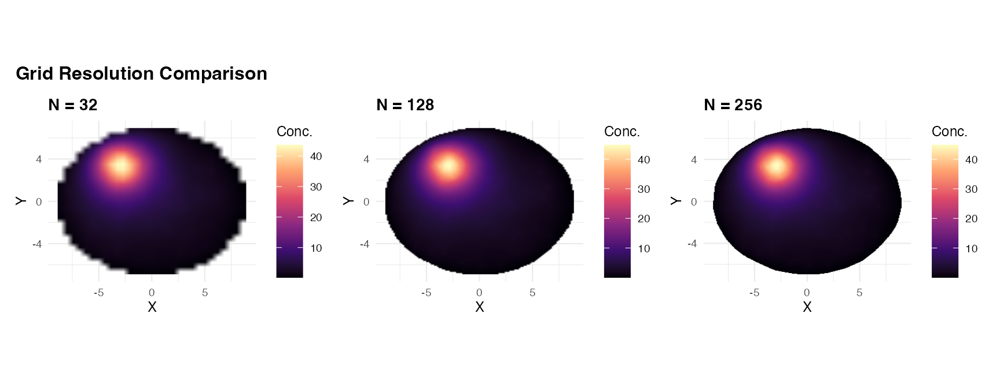
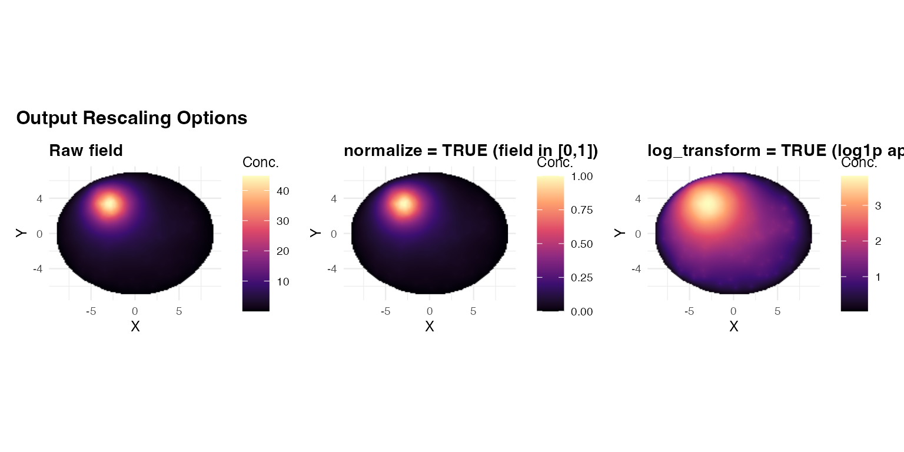

This vignette covers the parameters that most strongly affect the
output of estimate_concentration_field(). They are ordered
from most impactful to least:
- Diffusion length — controls spatial scale (shape)
- and independently — control amplitude
-
weight_col(UMI weighting) — rescales source strength per transcript -
include_external— whether transcripts outside the mask contribute -
grid_resolution— accuracy vs. speed -
normalizeandlog_transform— output rescaling
Shared setup
# Kidney-bean mask
in_bean <- function(x, y)
(x/9)^2 + (y/7)^2 < 1 & sqrt((x - 4.5)^2 + y^2) >= 3.5
cands <- data.frame(x = runif(20000, -11, 11), y = runif(20000, -9, 9))
tissue_pts <- cands[in_bean(cands$x, cands$y), ][1:3000, ]
if (requireNamespace("TissueMask", quietly = TRUE)) {
mask <- TissueMask::fit_spatial_mask(
tissue_pts, method = "raster",
raster_resolution = 200L, raster_sigma = 0.8,
raster_threshold = 0.15, verbose = FALSE
)
} else {
pts_sf <- st_as_sf(tissue_pts, coords = c("x", "y"))
mask <- st_convex_hull(st_union(pts_sf))
}
mu <- st_union(mask)
inside_fn <- function(d)
as.logical(st_within(st_as_sf(d, coords = c("x","y")), mu, sparse = FALSE)[,1])
tc_cl <- data.frame(x = rnorm(280, -3, 1.2), y = rnorm(280, 3.5, 0.9))
tc_bg_all <- data.frame(x = runif(600, -10, 10), y = runif(600, -8, 8))
tc <- rbind(tc_cl[inside_fn(tc_cl), ],
tc_bg_all[inside_fn(tc_bg_all), ][1:80, ])
tc$umi <- c(rpois(sum(inside_fn(tc_cl)), 18),
rpois(80, 3))1. Diffusion length L
is the single most important parameter. It determines how far a transcript’s influence extends in the tissue.
Use diffusion_length to set
directly, bypassing the
/
decomposition:
L_vals <- c(0.5, 1.5, 3.5, 7.0, 12.0, 20.0)
L_plots <- lapply(L_vals, function(Lv) {
r <- estimate_concentration_field(
mask, tc, diffusion_length = Lv, D = 1,
method = "fd", fd_solver = "direct",
grid_resolution = 128L, verbose = FALSE
)
df <- field_to_df(r)
rng <- range(df$field, na.rm = TRUE)
df$fn <- (df$field - rng[1]) / diff(rng)
ggplot(df, aes(x = x, y = y, fill = fn)) +
geom_raster(interpolate = TRUE) +
scale_fill_viridis_c(option = "magma", limits = c(0, 1),
name = "Norm.\nConc.", na.value = "transparent") +
coord_equal() + theme_minimal(base_size = 8) +
labs(title = sprintf("L = %g", Lv),
subtitle = sprintf("lambda = %.4f", 1/Lv^2),
x = NULL, y = NULL)
})
wrap_plots(L_plots, nrow = 2) +
plot_annotation(
title = "Diffusion Length Sweep (normalised per panel)",
subtitle = "Small L: tight peaks | Large L: tissue-wide field",
theme = theme(plot.title = element_text(face = "bold", size = 12),
plot.subtitle = element_text(size = 9, color = "grey40"))
)
| L | lambda | peak_concentration |
|---|---|---|
| 0.5 | 4.00000 | 9.228 |
| 1.5 | 0.44444 | 32.900 |
| 3.5 | 0.08163 | 57.040 |
| 7.0 | 0.02041 | 69.230 |
| 12.0 | 0.00694 | 73.240 |
| 20.0 | 0.00250 | 74.750 |
How to choose L in practice:
| Scenario | Suggested L |
|---|---|
| Tight spatial domains, distinguish adjacent clusters | 10–20% of inter-cluster distance |
| Moderate-range signalling (e.g. paracrine cytokines) | 20–50% of tissue diameter |
| Tissue-wide gradient (e.g. oxygen, morphogens) | > 50% of tissue diameter |
| Quick exploration | Try L = 1, 3, 10 and compare |
Shortcut: use
sweep_diffusion_length(c(1, 3, 10), mask, tc)to get a combined data frame for all three values.
2. D and lambda: shape vs amplitude
The spatial shape of the field depends only on . Changing and while keeping their ratio constant produces identical spatial patterns — only the amplitude changes, scaling as .
# L = 2 throughout: D * lambda = 1/L^2 = 0.25
dl_cases <- list(
list(D = 0.1, lam = 0.025, lbl = "D=0.1, lam=0.025"),
list(D = 1.0, lam = 0.25, lbl = "D=1, lam=0.25"),
list(D = 5.0, lam = 1.25, lbl = "D=5, lam=1.25"),
list(D = 20.0, lam = 5.0, lbl = "D=20, lam=5")
)
dl_plots <- lapply(dl_cases, function(co) {
r <- estimate_concentration_field(
mask, tc, D = co$D, lambda = co$lam,
method = "fd", fd_solver = "direct",
grid_resolution = 128L, verbose = FALSE
)
pk <- signif(max(r$field, na.rm = TRUE), 3)
df <- field_to_df(r)
ggplot(df, aes(x = x, y = y, fill = field)) +
geom_raster(interpolate = TRUE) +
scale_fill_viridis_c(option = "magma", name = "Conc.",
na.value = "transparent") +
coord_equal() + theme_minimal(base_size = 8) +
labs(title = co$lbl,
subtitle = sprintf("L=2 fixed | peak=%g", pk),
x = NULL, y = NULL)
})
wrap_plots(dl_plots, nrow = 1) +
plot_annotation(
title = "Fixed L=2, Varying D and lambda",
subtitle = "SHAPE is identical. Amplitude scales as 1/D.",
theme = theme(plot.title = element_text(face = "bold", size = 12),
plot.subtitle = element_text(size = 9, color = "grey40"))
)
Practical implication: When fitting to data, first determine (the spatial scale), then fix based on biophysical priors (or leave at 1 if only relative concentrations matter). is then determined as .
3. UMI weighting (weight_col)
Each transcript can carry a per-molecule count (UMI) that scales its
contribution to the source term. Pass the column name to
weight_col:
# Without weighting
res_unweighted <- estimate_concentration_field(
mask, tc, D = 1, lambda = 0.2,
method = "fd", grid_resolution = 128L, verbose = FALSE
)
# With UMI weighting
res_weighted <- estimate_concentration_field(
mask, tc, D = 1, lambda = 0.2, weight_col = "umi",
method = "fd", grid_resolution = 128L, verbose = FALSE
)
panel2 <- function(result, title = "") {
df <- field_to_df(result)
ggplot(df, aes(x = x, y = y, fill = field)) +
geom_raster(interpolate = TRUE) +
scale_fill_viridis_c(option = "magma", name = "Conc.",
na.value = "transparent") +
coord_equal() + theme_minimal(base_size = 9) +
labs(title = title, x = "X", y = "Y") +
theme(plot.title = element_text(face = "bold"))
}
(panel2(res_unweighted, "Unweighted (all transcripts = 1)") +
panel2(res_weighted, "UMI-weighted (cluster UMI ~18, bg ~3)")) +
plot_annotation(
title = "Effect of UMI Weighting",
theme = theme(plot.title = element_text(face = "bold", size = 12))
)
| Version | Peak | Total_source |
|---|---|---|
| Unweighted | 44.76 | 359 |
| UMI-weighted | 794.80 | 5273 |
When to use weight_col: When your data
has UMI counts that reflect true mRNA abundance differences. Unweighted
fields treat each detected molecule equally; weighted fields amplify
contribution from high-UMI transcripts (often genuine
high-expressers).
4. External transcripts (include_external)
By default, transcripts outside the mask are discarded. Setting
include_external = TRUE includes them as sources, which can
create elevated concentration near the tissue boundary from external
signal.
# Add some transcripts outside the mask
tc_ext <- rbind(tc,
data.frame(x = c(-12, -11, 13), y = c(0, 5, -2), umi = c(50, 40, 30)))
res_excl <- estimate_concentration_field(
mask, tc_ext, D = 1, lambda = 0.2,
include_external = FALSE,
grid_resolution = 128L, verbose = FALSE
)
res_incl <- estimate_concentration_field(
mask, tc_ext, D = 1, lambda = 0.2,
include_external = TRUE,
grid_resolution = 128L, verbose = FALSE
)
(panel2(res_excl, "include_external = FALSE (default)") +
panel2(res_incl, "include_external = TRUE")) +
plot_annotation(
title = "Effect of include_external",
subtitle = "External sources can elevate concentration near edges",
theme = theme(plot.title = element_text(face = "bold", size = 12),
plot.subtitle = element_text(size = 9, color = "grey40"))
)
5. Grid resolution
grid_resolution sets the number of cells per axis
().
Higher resolution gives smoother, more accurate fields but increases
memory and solve time.
res_times <- sapply(c(64L, 128L, 256L, 512L), function(N) {
t0 <- proc.time()["elapsed"]
estimate_concentration_field(
mask, tc, D = 1, lambda = 0.2,
method = "fd", fd_solver = "direct",
grid_resolution = N, verbose = FALSE
)
proc.time()["elapsed"] - t0
})| N | Grid_cells | Time_s |
|---|---|---|
| 64 | 4096 | 0.02 |
| 128 | 16384 | 0.13 |
| 256 | 65536 | 1.03 |
| 512 | 262144 | 6.89 |
res_low <- estimate_concentration_field(
mask, tc, D=1, lambda=0.2, method="fd",
grid_resolution = 32L, verbose = FALSE
)
res_med <- estimate_concentration_field(
mask, tc, D=1, lambda=0.2, method="fd",
grid_resolution = 128L, verbose = FALSE
)
res_high <- estimate_concentration_field(
mask, tc, D=1, lambda=0.2, method="fd",
grid_resolution = 256L, verbose = FALSE
)
(panel2(res_low, "N = 32") +
panel2(res_med, "N = 128") +
panel2(res_high, "N = 256")) +
plot_annotation(
title = "Grid Resolution Comparison",
theme = theme(plot.title = element_text(face = "bold", size = 12))
)
Practical guidance:
-
N = 64--128: fast exploration, reasonable accuracy -
N = 256: good balance; default -
N = 512+: high-resolution publication figures; usefd_solver = "iterative"ormethod = "green"to manage memory
6. Normalise and log-transform
Two output rescaling options:
-
normalize = TRUE: linearly rescales the field to . Useful when comparing fields across genes with different expression levels. -
log_transform = TRUE: applieslog1p()after solving. Compresses wide dynamic range (useful for highly focal sources).
res_raw <- estimate_concentration_field(
mask, tc, D = 1, lambda = 0.2, grid_resolution = 128L, verbose = FALSE
)
res_norm <- estimate_concentration_field(
mask, tc, D = 1, lambda = 0.2, normalize = TRUE,
grid_resolution = 128L, verbose = FALSE
)
res_log <- estimate_concentration_field(
mask, tc, D = 1, lambda = 0.2, log_transform = TRUE,
grid_resolution = 128L, verbose = FALSE
)
(panel2(res_raw, "Raw field") +
panel2(res_norm, "normalize = TRUE (field in [0,1])") +
panel2(res_log, "log_transform = TRUE (log1p applied)")) +
plot_annotation(
title = "Output Rescaling Options",
theme = theme(plot.title = element_text(face = "bold", size = 12))
)
| Setting | Min | Max |
|---|---|---|
| Raw | 0.03081 | 44.76265 |
| normalize=TRUE | 0.00000 | 1.00000 |
| log_transform=TRUE | 0.03034 | 3.82347 |
Parameter quick-reference
| Parameter | Controls | Default |
|---|---|---|
| diffusion_length | Spatial scale of field (shape) | NULL (computed from D and lambda) |
| D | Amplitude (C proportional to 1/D) | 1.0 |
| lambda | Clearance rate (determines L with D) | 0.1 |
| weight_col | Per-transcript source weight | NULL |
| include_external | Whether to use off-mask transcripts | FALSE |
| grid_resolution | Grid density (N x N cells) | 256 |
| normalize | Rescale output to [0, 1] | FALSE |
| log_transform | Apply log1p() to output | FALSE |
| boundary_condition | Dirichlet (absorbing) or Neumann (reflecting) | dirichlet |
| fd_solver | Direct (LU) or iterative (SOR) | direct |